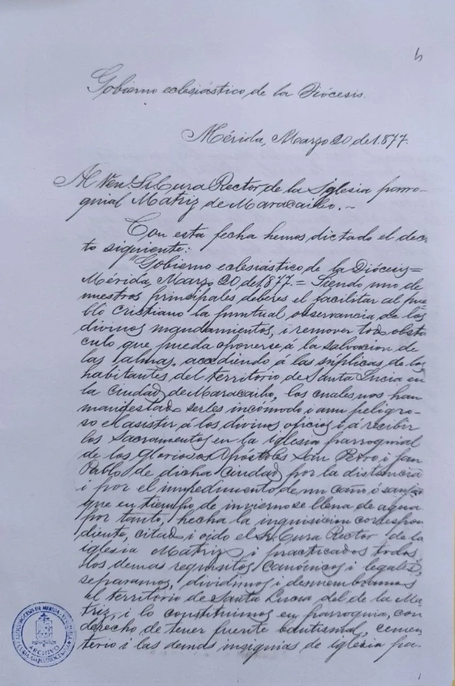
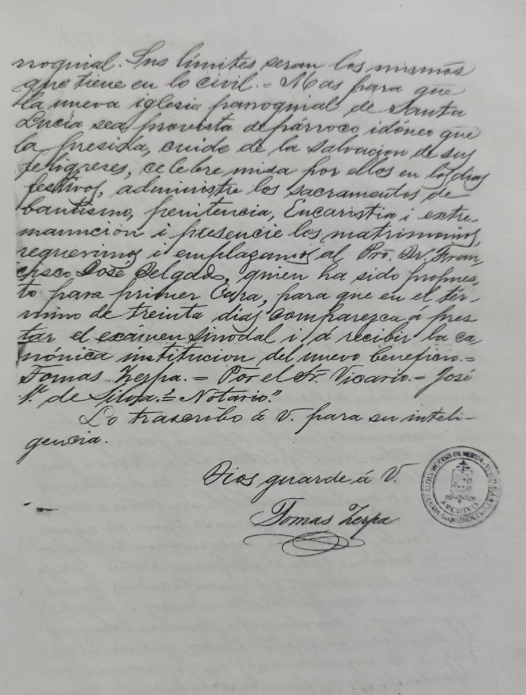
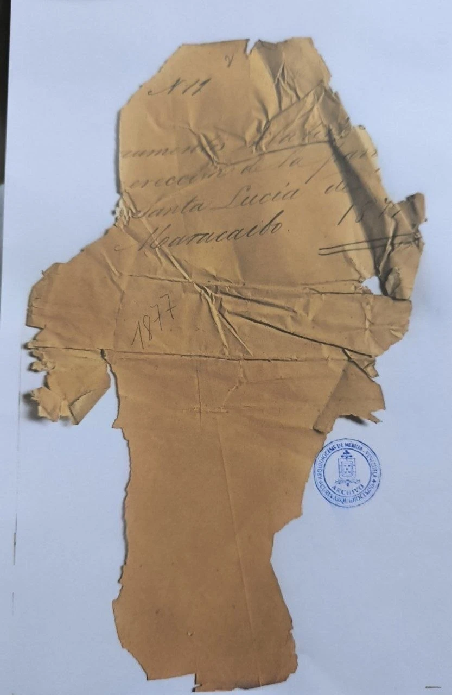

Fieles a la tradición. Abiertos a la misión.
✦ ❦ ✦¡La cuenta regresiva ha comenzado! Para el gran día faltan
✦ ✦ ✦
El 20 de marzo de 1877, el Gobierno eclesiástico de la Diócesis de Mérida separó el territorio de Santa Lucía de la antigua parroquia Matriz de San Pedro y San Pablo de Maracaibo y lo constituyó en parroquia. En 2027 cumpliremos 150 años de aquel decreto: un siglo y medio de sacramentos, de historia y de vida compartida alrededor de nuestra "casita azul". ¡Y lo vamos a celebrar en grande!
Estamos preparando un año de fiesta con misas, actividades culturales y encuentros comunitarios. Muy pronto publicaremos aquí el calendario oficial de las celebraciones de los 150 años. ¡Mantente atento!
✦ ✦ ✦
Este es el documento que dio origen a nuestra parroquia, conservado en el Archivo de la Curia Arquidiocesana de Mérida (expediente N.º 11). Los vecinos de Santa Lucía habían pedido su propia parroquia porque llegar a la iglesia Matriz era "incómodo i aun peligroso… por la distancia i por el impedimento de un caño ó zanjón que en tiempo de invierno se llena de agua".



Decreto de Erección de la Parroquia
Santa Lucía de Maracaibo
Gobierno eclesiástico de la Diócesis.
Mérida, Marzo 20 de 1877.
Al Ven. Sr. Cura Rector de la Iglesia parroquial Matriz de Maracaibo.—
Con esta fecha hemos dictado el decreto siguiente:
"Gobierno eclesiástico de la Diócesis = Mérida, Marzo 20 de 1877. = Siendo uno de nuestros principales deberes el facilitar al pueblo cristiano la puntual observancia de los divinos mandamientos, i remover todo obstáculo que pueda oponerse á la salvacion de las almas, accediendo á las súplicas de los habitantes del territorio de Santa Lucía en la ciudad de Maracaibo, los cuales nos han manifestado serles incómodo i aun peligroso el asistir á los divinos oficios i á recibir los Sacramentos en la iglesia parroquial de los Gloriosos Apóstoles San Pedro i San Pablo de dicha ciudad, por la distancia i por el impedimento de un caño ó zanjón que en tiempo de invierno se llena de agua; por tanto, hecha la inquisicion correspondiente, citado i oido el Sr. Cura Rector de la iglesia Matriz, i practicados todos los demas requisitos canónicos i legales, separamos, dividimos i desmembramos el territorio de Santa Lucía del de la Matriz, i lo constituimos en parroquia, con derecho de tener fuente bautismal, cementerio i las demas insignias de iglesia pa-
Folio 2rroquial. Sus límites serán los mismos que tiene en lo civil. = Mas para que la nueva iglesia parroquial de Santa Lucía sea provista de párroco idóneo que la presida, cuide de la salvacion de sus feligreses, celebre misa por ellos en los dias festivos, administre los sacramentos de bautismo, penitencia, Eucaristía i extremauncion i presencie los matrimonios, requerimos i emplazamos al Pro. Dr. Francisco José Delgado, quien ha sido propuesto para primer Cura, para que en el término de treinta dias comparezca á prestar el exámen sinodal i á recibir la canónica institucion del nuevo beneficio. = Tomás Zerpa. = Por el Sr. Vicario. = José V. de Silva. = Notario."
Lo trascribo á V. para su inteligencia.
Dios guarde á V.
Tomás Zerpa
(rúbrica)
Transcripción fiel del documento original, respetando la ortografía del siglo XIX (uso de "i" por "y", acentuación de la época, etc.). Expediente N.º 11 — Archivo de la Curia Arquidiocesana de Mérida, Venezuela. La carátula original se encuentra muy deteriorada; su texto se reconstruye por contexto: "N.º 11 — Documentos relativos a la erección de la parroquia Santa Lucía de Maracaibo. 1877".
✦ ✦ ✦
Santa Lucía fue separada, dividida y desmembrada de la Matriz de San Pedro y San Pablo, y constituida en parroquia con todas sus insignias.
Con derecho a fuente bautismal y cementerio: desde 1877 los hijos de este territorio se bautizan en su propia iglesia.
El Pbro. Dr. Francisco José Delgado fue propuesto como primer Cura, llamado a presidir y cuidar de la salvación de sus feligreses.
La comunidad sigue viva y creciendo. En 2027 celebraremos con gratitud este siglo y medio, fieles a la tradición y abiertos a la misión.
150 años.
Fieles a la tradición. Abiertos a la misión.